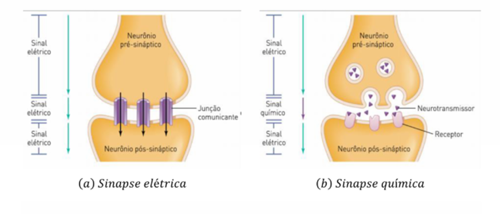
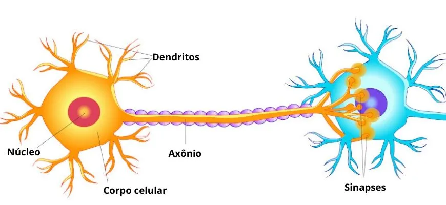

Os neurônios são células especializadas responsáveis pela transmissão de sinais elétricos e químicos no sistema nervoso, permitindo a comunicação entre o cérebro, a medula espinhal e o resto do corpo. Eles se comunicam através das sinapses, que são conexões entre neurônios. Existem dois tipos principais de sinapse: elétrica, que é rápida e direta, e química, onde neurotransmissores são liberados para transmitir os sinais. Esse processo é essencial para funções como movimento, aprendizado e memória.
Neurônios
Os neurônios são células especializadas que desempenham um papel fundamental no sistema nervoso, permitindo a comunicação entre diferentes partes do corpo. Sua principal função é transmitir impulsos elétricos e sinais químicos para coordenar atividades corporais essenciais, como movimento, percepção e pensamento. Eles possuem uma estrutura única, composta por três partes principais: o corpo celular, os dendritos e o axônio. O corpo celular contém o núcleo da célula, enquanto os dendritos recebem sinais de outros neurônios e o axônio os transmite para outras células. Existem diversos tipos de neurônios, cada um com funções específicas. Por exemplo, os neurônios sensoriais são responsáveis por captar estímulos do ambiente e enviá-los ao sistema nervoso central, enquanto os neurônios motores transmitem os sinais do cérebro e da medula espinhal para os músculos, facilitando o movimento.

Sinapses
Os neurônios se comunicam entre si através das sinapses, pontos de conexão onde ocorre a troca de sinais. Essa comunicação pode ser elétrica, direta e rápida, ou química, envolvendo neurotransmissores que atravessam a fenda sináptica. Essa interação entre neurônios é crucial para processos como aprendizado, memória e controle motor, destacando a complexidade e a importância dos neurônios na função cerebral.
A Importância dos Neurônios
A importância dos neurônios vai além do sistema nervoso central, sendo essenciais para o funcionamento de órgãos e sistemas corporais. Alterações na estrutura ou função dos neurônios podem levar a doenças neurodegenerativas, como Alzheimer, Parkinson e esclerose múltipla, que afetam a comunicação neural e comprometem a saúde mental e física.
Essas células são fundamentais para todas as nossas funções cognitivas e motoras, tornando-se a base do nosso comportamento, emoções e habilidades de adaptação.
